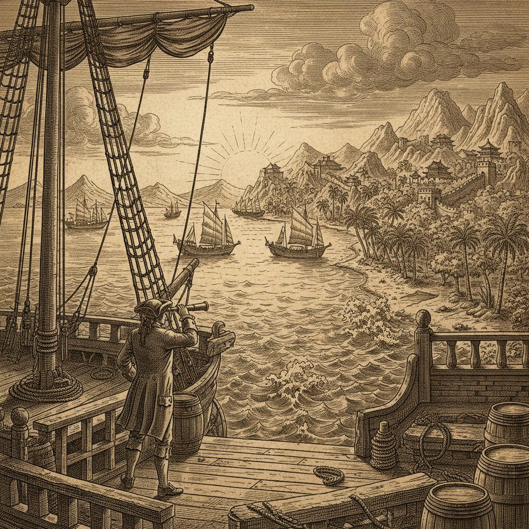
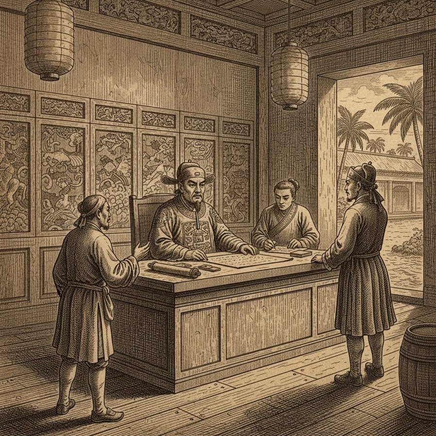
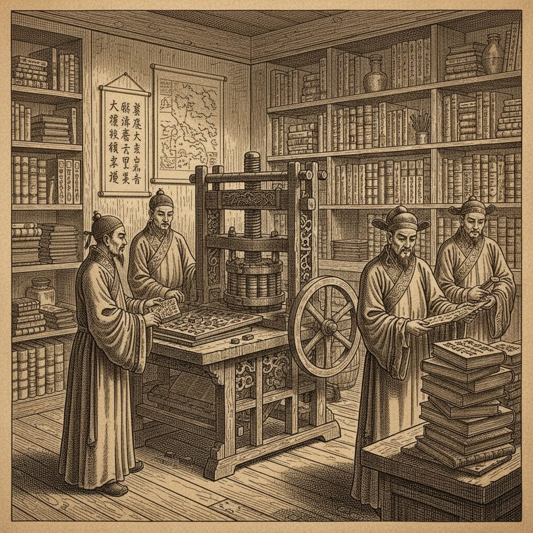
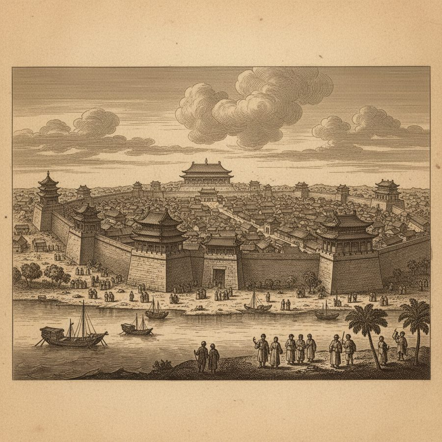
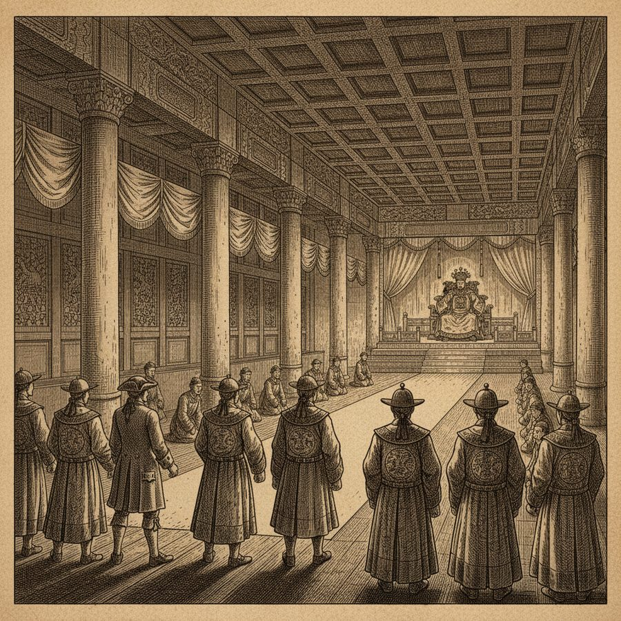
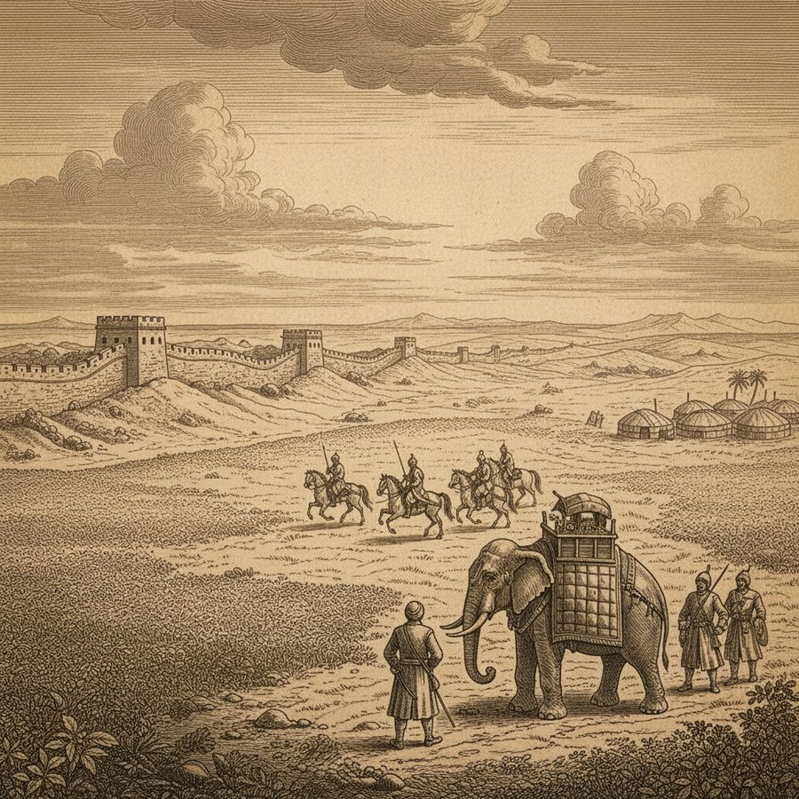

The Empire of China — No Lawyers and an Unseen Emperor
A vast empire where lawyers are forbidden, printing is ancient, and the emperor rules from a throne few have ever laid eyes on.
From the ships' roads of the Indies Noble turns his attention to the mightiest state on earth: the Empire of China. He relates the emperor's august title, the government and the laws of the country — laws so simple in their execution, he reports, that lawyers are not allowed to practice and no such profession encumbers the people. He describes a land that has known printing from time beyond memory, its military force, and above all the fabled centre of its power: Pekin, and the emperor's palace and throne, with a description of his person and dress and the solemn manner of receiving ambassadors. Rounding off, Noble gives 'a short account of Tartary' — the vast steppe north of the Great Wall, home of the very Manchu people who now occupied the Dragon Throne. Seen through a European merchant's eyes in 1748, China appears orderly, ancient and self-contained: a civilization that needed no lawyers and showed itself to strangers through ceremony rather than intimacy.
Figures: The Emperor of China, the Mandarins, Noble
The story as a comic






Why it stands out
For an 18th-century European, China was the supreme marvel of the age — and Noble's account (with its striking claim that the Chinese govern without lawyers) captures both what traders actually knew and what they romanticized, at the very moment the China trade was about to shape the world economy.